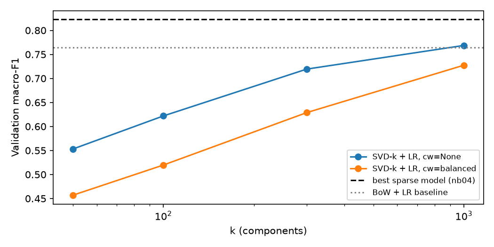
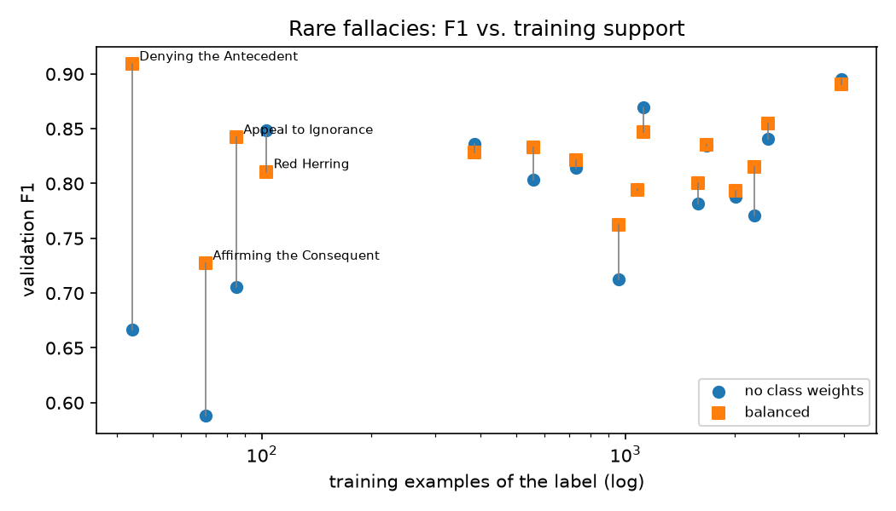
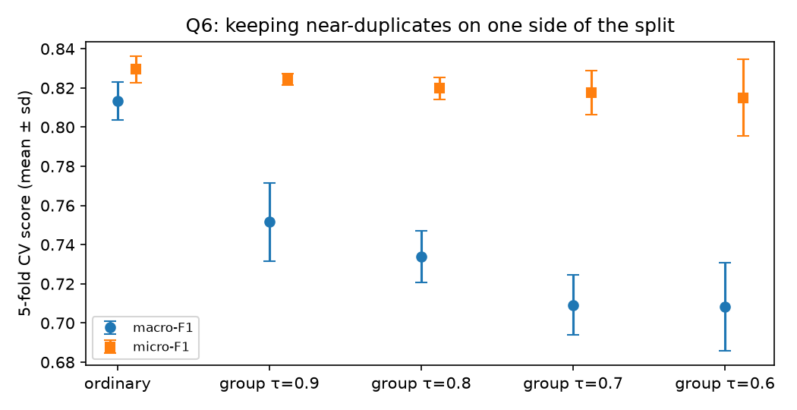
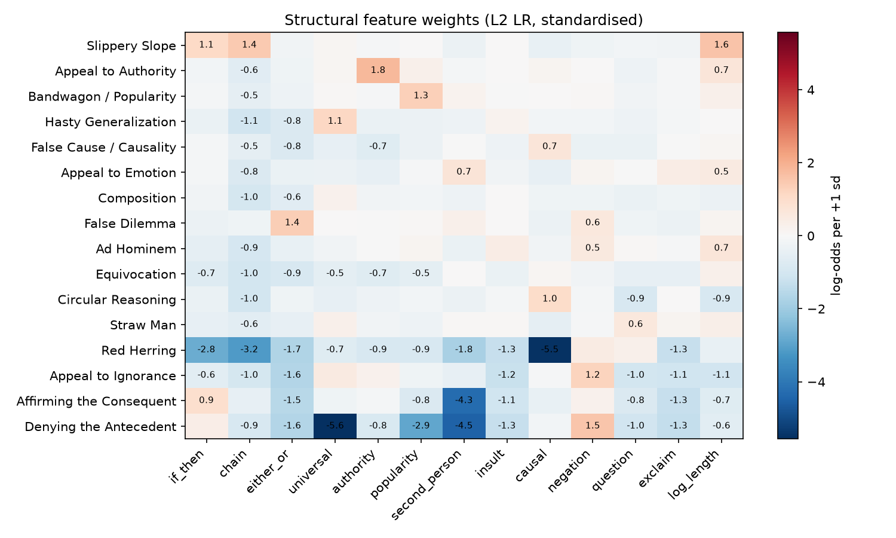
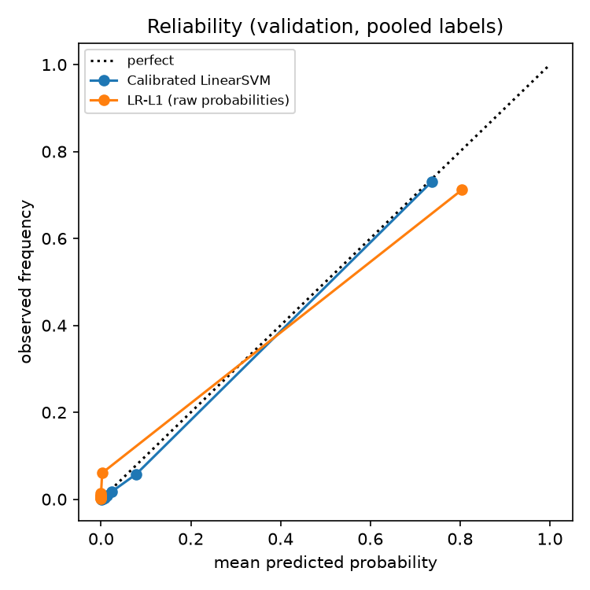

Do classical models detect logical fallacies, or memorise argument templates?
A multi-label study of 16 informal fallacies with TF-IDF features, Lasso and ridge logistic regression, PCA projections and SVMs, and an audit of how much the models rely on subject-matter shortcuts.
1 · The question
Research question. When linear and margin-based classifiers label informal logical fallacies, how much of their accuracy comes from surface lexical shortcuts (topic words and templates that happen to co-occur with a label) rather than from words that express the reasoning pattern, and do L1 sparsity or SVM margins reduce that reliance?
A logical fallacy is an error in reasoning that makes an argument unsound or misleading even when its conclusion happens to be true: “If we allow calculators in class, students will forget arithmetic and the economy will collapse” is a slippery slope whatever one thinks of calculators.
- Unit (one row)
- One short natural-language argument (median 26 words).
- Target
- A 16-dimensional binary vector: which of 16 fallacies the argument contains (1–5 per argument, mean 1.33). This is multi-label classification.
- When a prediction is made
- At the moment a piece of text is available, e.g. a comment is posted. Only the text is used: no author, context, thread or metadata.
- What is not claimed
- That the model can tell whether a text is fallacious at all: every training row contains a fallacy, so the model is only asked which fallacies are present. Nor do we claim the model “understands” reasoning; we measure what its predictions depend on.
2 · Data
- Source
logical_fallacy_dataset.xlsx, built fromlogical_fallacy_model_candidates.jsonl(19,246 raw multiple-choice, true/false and free-form fallacy items), cleaned and de-duplicated by the dataset builder. [Team: add the original URL, licence and citation here.]- Size after cleaning
- 17,866 arguments; 468 more were set aside for conflicting or rare labels.
- Labels
- Silver labels: produced from an LLM-written explanation of each answer, then normalised to 16 names. Not manually verified.
- Access
- The spreadsheet is in the repository (
data/raw/); it contains no personal data. The website ships only derived numbers and ~150 short test arguments.
Class imbalance
Slippery Slope appears in 27% of arguments; the four rarest labels appear in fewer than 1% (57–129 arguments in total, 5–15 in the test split). This is why macro-F1 (every label counts equally) is the primary metric.
Quality issues that matter for the question
- Templates. Many arguments are synthetic paraphrases of the same template. 1,744 arguments mention calculators; 1,242 of those begin with the identical ten words “If we allow students to use calculators in math class,” and 90% are Slippery Slope (notebook 02).
- Near-duplicates across splits. The official split hashes the normalised text, so exact duplicates never cross splits, but paraphrases do: 268 cross-split pairs with TF-IDF cosine ≥ 0.8 within the calculator subset alone.
- Label name in the text. 45 arguments literally contain the words “slippery slope” (98% of them carry that label).
- No missing values, no duplicate ids or texts, and the one-hot columns agree with the label strings (notebook 01).
3 · Preprocessing
- Tokenisation. Lower-case word tokens with contractions kept (
don't,they'll). Notebook 03 also compared a BPE subword tokenizer (trained on train only); it was within 0.01 macro-F1 of word tokens, so word tokens were kept because they are interpretable. - TF-IDF with unigrams + bigrams, sublinear term frequency
1 + ln(tf), terms in ≥ 2 training arguments, L2 row normalisation. Vocabulary and IDF weights are fitted on the training split only and then applied unchanged to validation and test (38,246 features). - Stop words are kept. Words like if, then, either, because, all are exactly the structural cues a fallacy detector should use; notebook 02 showed that removing them deletes these cues.
- Proper-noun removal (proposal). Two versions, both fixed rules that learn nothing from our data: NLTK part-of-speech tagging (tokens tagged NNP/NNPS replaced by a placeholder), and a capitalisation heuristic. Validation macro-F1 . Neither helps, so proper nouns are not where the shortcuts live; the final models use unmasked text and this is reported as an ablation.
- Structural / rhetorical features (proposal: “tabular syntactic, rhetorical and n-gram representations”). 13 counts per argument from regular expressions written from the Label Guide definitions: if–then consequence, causal chain words, either–or, universal quantifiers, authority, popularity, second person, insults, causal connectives, negation, “?”, “!”, and log length (
src/structural.py). They are standardised with a scaler fitted on train and appended to TF-IDF with a weight w chosen by cross-validation. - Learned projections and scalers (truncated SVD, standardisation, Platt calibration) are always fitted inside a pipeline on training data only.
4 · Baseline and methods
| Model | Core idea / objective | Why it fits this question |
|---|---|---|
| Most-frequent label | Predict Slippery Slope for every argument | The strongest no-information rule. (An all-zeros “majority” predictor scores macro-F1 = 0 because every label is a minority class.) |
| Stratified random | Predict each label with its training prevalence | Shows what chance looks like under imbalance. |
| Unigram BoW + logistic regression | Word counts; L2-penalised log-loss, one model per label | The team's first baseline (notebook 03): a meaningful, simple bar to beat. |
| TF-IDF + Lasso LR | min ‖w‖₁ + C·Σ log-loss | The L1 penalty sets most coefficients to exactly zero, so we can read off which tokens the model needs. |
| TF-IDF + ridge LR | min ½‖w‖₂² + C·Σ log-loss | Spreads weight across correlated n-grams (“in math”, “math class”) instead of picking one arbitrarily. |
| TF-IDF + linear SVM | min ½‖w‖₂² + C·Σ hinge loss | Maximum-margin boundary; robust in sparse high-dimensional text. |
| Truncated SVD (PCA) + LR | Project onto the top-k directions of variance, then LR | Tests whether dense, de-correlated features generalise better than coordinate-wise selection. |
| TF-IDF + structural + linear SVM | Same hinge objective on [TF-IDF | w · structural] | Tests whether explicit argument-form features add to n-grams (the proposal's structural-vs-lexical question). |
| SVD-300 + RBF SVM | Hinge loss in the space of K(x,x′) = exp(−γ‖x−x′‖²) | Can model interactions between cue words. Run on a 300-d projection because a kernel on 38k sparse features was too slow on a laptop. |
All models are one-vs-rest over the 16 labels. Class weighting (balanced = loss re-weighted by inverse label frequency) was a tuned option for every family.
Why regularisation is necessary here
The proposal predicted that co-occurring rhetorical terms make the Gram matrix XᵀX ill-conditioned. Measured on the 2,000 most frequent TF-IDF features (notebook 09): the condition number κ(X) is , so κ(XᵀX) = κ(X)² is . That is far beyond 1/ε ≈ 4.5×10¹⁵ for 64-bit floats, so XᵀX is numerically singular. There are feature pairs with |correlation| > 0.95, e.g. “unable” / “unable to”. Without a penalty the logistic-regression solution is not unique. Ridge adds λI and so makes the problem well-posed, sharing weight across a correlated pair; Lasso keeps one member of the pair, essentially arbitrarily, which is why its selected words must not be over-interpreted.
5 · Evaluation design
- Split, fixed before modelling: the dataset's official 80/10/10 split: train 14,341 · validation 1,768 · test 1,757. It hashes the normalised text, so exact duplicates never cross splits. It is also effectively stratified (proposal): no label's prevalence in any split differs from the whole dataset by more than percentage points (notebook 09). We therefore keep it rather than draw a new split that would allow duplicates to cross.
- Hyperparameters chosen by validation folds (proposal). 5-fold multilabel-stratified cross-validation on the training split, with the vectoriser refitted inside each fold, chooses C, class weight and the structural weight w by mean macro-F1 (notebook 09). The separate validation split was used for the first grid (notebooks 04–05), for the per-label thresholds (notebook 07), and as a second check. CV confirmed every validation-split choice. Notebooks 04–09 never load the test split.
- Final test evaluation (notebook 10) of the configurations saved in
results/selection.json, refitted on train only. It was run a second time after the proposal items were added; no earlier choice changed (see §12). - Group-based evaluation (team research question Q6). Near-duplicate clusters are built from train + validation (cosine ≥ τ, connected components). 5-fold CV that keeps each cluster inside one fold is compared with ordinary stratified CV. The difference is the part of the score that comes from seeing near-copies (§7D).
- Template-overlap check. Each test argument is placed in a bucket by its maximum cosine similarity to any training argument (TF-IDF fitted on train, labels unused): template-seen ≥ 0.8, intermediate 0.5–0.8, novel < 0.5. This answers “does the official split overstate performance?” without re-splitting.
Metrics
- Macro-F1 (primary): mean of the 16 per-label F1 scores; rare fallacies count as much as common ones.
- Micro-F1, precision, recall: pooled over all argument–label decisions; dominated by frequent labels.
- Hamming loss: fraction of the 16 decisions per argument that are wrong. Subset accuracy: the whole label set exactly right (strict).
- Uncertainty: 95% bootstrap intervals over test arguments (1,000 resamples), and paired bootstrap intervals for the difference from the baseline. These describe sampling noise in this test set; they say nothing about other datasets.
- Calibration (Brier score, reliability curves) and precision–recall curves for threshold choice.
6 · Results
Test-set macro-F1 with 95% bootstrap intervals
Validation: Lasso sparsity versus accuracy

Validation: dense projections

Per-label test F1
The three focus fallacies as binary detectors (proposal)
One linear SVM per fallacy, on test. Plain accuracy is shown next to the majority-class baseline (“always absent”), as the proposal asked, with imbalance-aware metrics beside it.
BoW vs. TF-IDF, with the model held fixed (team question Q2)
Validation macro-F1. Notebook 04 compared a BoW baseline with tuned TF-IDF models; here only the representation changes (notebook 08).
Class imbalance and rare fallacies (team question Q4)

7 · Shortcut audit: what do the models actually use?
Every vocabulary item is put into one of three groups by a small lexicon written before looking at any model weights (src/text.py):
topic: everything else, mostly what the argument is about (calculators, vaccines, homework) · cue: ≈150 words whose meaning signals a reasoning pattern (eventually, everyone, expert, either, because, idiot) · function: remaining stop-words.
A. Template familiarity explains a large part of the score
B. Label-preserving edits flip predictions
For every correctly detected (argument, fallacy) pair in the test set, we make an edit that should not change the fallacy and count how often the prediction flips to “absent”.
C. Deleting or isolating token groups
Delete a group at prediction time (test macro-F1, models trained on full text)
Train and evaluate on one group only (validation macro-F1, linear SVM re-fitted on the restricted text each time)
D. Keeping near-duplicates apart: group-based evaluation (team question Q6)

E. Structural features: real signal, no extra gain

F. Where the weight sits

Interactive: shortcut perturbation inspector
Pick a held-out test argument (grouped by whether the final model got it right). Click words to delete them and watch the Lasso model's 16 probabilities update live; the black tick marks the original probability and the dashed line is 0.5. Coloured underlines show the token group. Try deleting only the topic words and see whether the fallacy is still found.
Predicted probabilities (click a row to explain that label)
Active non-zero Lasso coefficients (largest contributions w·x)
Type your own argument
Choosing a decision threshold by cost
A default cut-off of 0.5 implicitly assumes a missed fallacy costs as much as a false alarm. If a miss costs r times a false alarm, the cost-optimal rule for a calibrated probability is to flag the fallacy when p > 1 / (1 + r). The best model (linear SVM) gives margins, not probabilities, so it was wrapped in Platt scaling fitted with 5-fold cross-validation inside the training split. Its validation Brier score is 0.021, versus 0.027 for the over-confident Lasso model.

Precision–recall curve (test) and current operating point
Expected cost per argument (CFP = 1) as the cost ratio changes
Computed live from the calibrated SVM's test-set probabilities. The test split was not used to choose anything shown in this tool; it only displays the consequences of a threshold choice.
8 · Errors
Critical boundary arguments (support vectors)
For a linear SVM f(x) = wᵀx + b, a training argument with y·f(x) ≤ 1 is an active support vector: only these arguments determine w. The validation arguments closest to each boundary (|f(x)| ≈ 0):
Most frequent confusions
For each test argument, every missed true label paired with every spurious predicted label (final thresholded model).
Representative errors
Three patterns recur. (1) Compound arguments such as “everyone is doing it, and if we don't we'll be homeless” carry two fallacies, and the model often finds only the one with the stronger template. (2) Neighbouring fallacies (Composition vs. Hasty Generalization vs. Bandwagon) share wording like “all” and “everyone”. (3) Several “errors” look like label noise in the silver labels: an argument built on “everyone in our school has one … join the trend” is labelled only Appeal to Emotion, and the model's Bandwagon prediction is arguably correct. Errors are concentrated in the novel bucket.
9 · Limitations
- Silver labels. Labels come from LLM explanations, not annotators. Scores measure agreement with those labels, and some errors are label noise.
- No “no fallacy” class. A deployed model would flag fallacies in every sentence. The proposal's fallacy-vs-valid detection could not be evaluated; the focus-fallacy detectors in §6 only separate one fallacy from the others.
- Synthetic, templated text. Even our “novel” bucket shares the dataset's style; performance on real social-media arguments is unknown and likely lower.
- The lexicon is coarse. The topic/cue/function split is a ≈150-word hand-made list; “topic” includes missed rhetorical words, so topic-reliance numbers are upper bounds.
- Rare labels. 5–15 test examples for four labels; their F1 values and tuned thresholds are very noisy.
- Compute compromises. The RBF SVM ran on a 300-d SVD projection; the largest C values sat at the edge of the grid (C = 1000) for Lasso and ridge, where the curve had flattened (gain < 0.005).
- Prediction is not explanation. A large coefficient shows that a token is useful for this dataset, not that it causes an argument to be fallacious.
10 · Conclusion
11 · Reproduce
git clone https://github.com/whats-grass/Logical_Fallacy_Detection.git
cd Logical_Fallacy_Detection
python -m venv venv # Python 3.11 or 3.12
source venv/bin/activate # Windows PowerShell: .\venv\Scripts\Activate.ps1
python -m pip install --upgrade pip
pip install -r requirements.txt
python -c "import nltk; nltk.download('averaged_perceptron_tagger_eng'); nltk.download('punkt_tab')"
# notebooks 01-03 (audit, EDA, baselines): open in VS Code and Run All, in order
python -m src.run_all # notebooks 04-10 + website data (about 45-60 min)
python -m http.server -d website # open http://localhost:8000
- Data:
data/raw/logical_fallacy_dataset.xlsx, sheetDataset; split columnsplit(train / val / test). - Notebooks 04–09 use train and validation only; notebook 10 is the held-out test evaluation and runs last.
- Selected hyperparameters:
results/selection.json. Validation and CV grids:results/val_*.csv,results/cv_grid_train.csv. Test results:results/test_results.csv. Near-duplicate clusters:data/processed/near_dup_groups_trainval.csv. - The full pipeline was run on Python 3.12.3 (as in the team setup guide) and on 3.13. Notebook 03 reproduces its published validation numbers exactly, and every reported metric agrees across the two versions (largest difference 7×10⁻⁸, in Platt-calibrated probabilities).
- Random seed 42 everywhere; scikit-learn 1.9.1. The website is static HTML/CSS/JS in
website/, deployed by.github/workflows/pages.yml; its Lasso model is re-implemented in JavaScript and checked against Python on load (see the self-check line under the inspector).
12 · Team contributions and AI use
[Team: replace with your own account.]
- Ujjawal Awasthi (25110329): dataset audit, EDA, template / near-duplicate investigation, BoW and BPE baselines (notebooks 01–03).
- Varad Gupta (25110339): TF-IDF / regularised models, PCA and SVM experiments, shortcut audit, thresholds, final evaluation and website (notebooks 04–10,
src/,website/).
AI assistance. Claude and ChatGPT was used to help in drafting the experiment code in src/ and notebooks, draft website text, and build the interactive tools. All reported numbers come from executing the notebooks. We re-ran and checked them, and are responsible for every result.
Test-set use. The final test notebook was executed and evaluated the models of exisiting notebooks. New notebooks were added according to the requirements, ran again with two additional models chosen without looking at test (TF-IDF + structural SVM, focus-fallacy detectors). Cross-validation left every earlier choice unchanged, so the rows shared by both runs are identical.
Built with plain HTML, CSS and JavaScript; no tracking, no external requests.